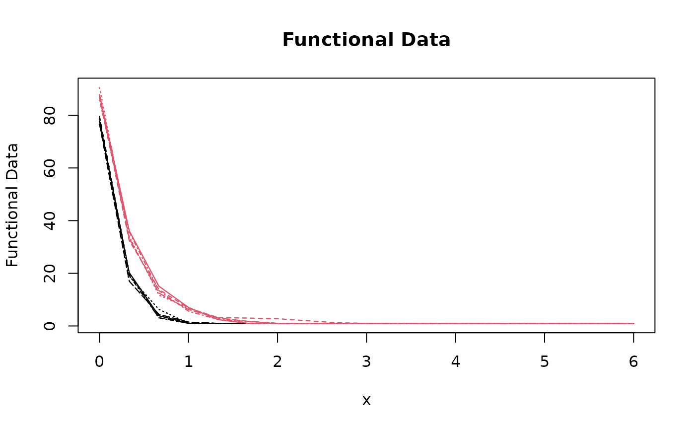

Two-sample test for functional representations of persistence homology data
Source:R/two-sample-functional-test.R
two_sample_functional_test.RdThis function performs a two-sample test for persistence homology data using
the theory of permutation hypothesis testing to test the null hypothesis that
the two samples come from the same distribution. The input data must be objects
of class persistence_set typically produced by phutil::as_persistence_set().
Usage
two_sample_functional_test(
x,
y,
dimension = 0L,
scale_size = 100L,
representation = c("betti", "euler", "life", "silhouette", "entropy"),
mu = 0,
order = 2L,
nknots = scale_size,
B = 1000L,
paired = FALSE
)Arguments
- x
An object of class
persistence_settypically produced byphutil::as_persistence_set()specifying the first sample.- y
An object of class
persistence_settypically produced byphutil::as_persistence_set()specifying the second sample.- dimension
An integer value specifying the homology dimension to use. Defaults to
0L, which corresponds to the 0-dimensional homology.- scale_size
An integer value specifying the number of scale values to use for the functional representation. Defaults to
100L.- representation
A string specifying the functional representation to use. Choices are
"betti","euler","life","silhouette", and"entropy". Defaults to"betti".- mu
The difference between the first functional population and the second functional population under the null hypothesis. Either a constant (in this case, a constant function is used) or a
J-dimensional vector containing the evaluations on the same grid whichdataare evaluated. The default ismu=0.- order
Order of the B-spline basis expansion. The default is
order=2.- nknots
An integer value specifying the number of knots to use for the B-spline representation. Defaults to
scale_size.- B
An integer value specifying the number of permutations to use for the permutation hypothesis test. Defaults to
1000L.- paired
A logical indicating whether the test is paired. The default is
FALSE.
Value
A length-4 list containing the following objects:
xfd: A numeric matrix of shape \(n_1 \times p\) storing the representation of the first sample on a uniform grid.yfd: A numeric matrix of shape \(n_2 \times p\) storing the representation of the second sample on a uniform grid.scale_seq: A numeric vector of shape \(p\) storing the scale sequence used for the functional representation.iwt: An object of classITP2which is a list containing at least the following components:basis: A string indicating the basis used for the first phase of the algorithm. In this case, equals to"B-spline".test: A string indicating the type of test performed. In this case, equals to"2pop".mu: The difference between the mean of the first and second populations under the null hypothesis (as entered by the user).paired: A boolean value indicating whether the two samples are paired or not (as entered by the user).coeff: A numeric matrix of shape \(n \times p\) of the \(p\) coefficients of the B-spline basis expansion, with \(n = n_1 + n_2\). Rows are associated to units and columns to the basis index. The first \(n_1\) rows report the coefficients of the first population units and the following \(n_2\) rows report the coefficients of the second population units.pval: A numeric vector of shape \(p\) storing the uncorrected p-values for each coefficient of the B-spline basis expansion.pval.matrix: A numeric matrix of shape \(p \times p\) of the p-values of the multivariate tests. The element \((i, j)\) of thepval.matrixmatrix contains the p-value of the joint NPC test of the components \((j, j+1, \dots, j+(p-i))\).corrected.pval: A numeric vector of shape \(p\) storing the corrected p-values for each coefficient of the B-spline basis expansion.labels: A character vector of shape \(n\) storing the membership of each unit to the first or second population.data.eval: A numeric matrix of shape \(n \times p\) storing the evaluation of the functional data on a uniform grid.heatmap.matrix: A numeric matrix storing the p-values. Used only for plots.
References
Pini, A., & Vantini, S. (2017). Interval-wise testing for functional data. Journal of Nonparametric Statistics, 29(2), 407-424.
Examples
out <- two_sample_functional_test(trefoils1, archspirals, B = 100L, scale_size = 50L)
#> [1] "First step: basis expansion"
#> Swapping 'y' and 'argvals', because 'y' is simpler,
#> and 'argvals' should be; now dim(argvals) = 49 ; dim(y) = 49 x 48
#> [1] "Second step: joint univariate tests"
#> [1] "Third step: interval-wise combination and correction"
#> [1] "creating the p-value matrix: end of row 2 out of 49"
#> [1] "creating the p-value matrix: end of row 3 out of 49"
#> [1] "creating the p-value matrix: end of row 4 out of 49"
#> [1] "creating the p-value matrix: end of row 5 out of 49"
#> [1] "creating the p-value matrix: end of row 6 out of 49"
#> [1] "creating the p-value matrix: end of row 7 out of 49"
#> [1] "creating the p-value matrix: end of row 8 out of 49"
#> [1] "creating the p-value matrix: end of row 9 out of 49"
#> [1] "creating the p-value matrix: end of row 10 out of 49"
#> [1] "creating the p-value matrix: end of row 11 out of 49"
#> [1] "creating the p-value matrix: end of row 12 out of 49"
#> [1] "creating the p-value matrix: end of row 13 out of 49"
#> [1] "creating the p-value matrix: end of row 14 out of 49"
#> [1] "creating the p-value matrix: end of row 15 out of 49"
#> [1] "creating the p-value matrix: end of row 16 out of 49"
#> [1] "creating the p-value matrix: end of row 17 out of 49"
#> [1] "creating the p-value matrix: end of row 18 out of 49"
#> [1] "creating the p-value matrix: end of row 19 out of 49"
#> [1] "creating the p-value matrix: end of row 20 out of 49"
#> [1] "creating the p-value matrix: end of row 21 out of 49"
#> [1] "creating the p-value matrix: end of row 22 out of 49"
#> [1] "creating the p-value matrix: end of row 23 out of 49"
#> [1] "creating the p-value matrix: end of row 24 out of 49"
#> [1] "creating the p-value matrix: end of row 25 out of 49"
#> [1] "creating the p-value matrix: end of row 26 out of 49"
#> [1] "creating the p-value matrix: end of row 27 out of 49"
#> [1] "creating the p-value matrix: end of row 28 out of 49"
#> [1] "creating the p-value matrix: end of row 29 out of 49"
#> [1] "creating the p-value matrix: end of row 30 out of 49"
#> [1] "creating the p-value matrix: end of row 31 out of 49"
#> [1] "creating the p-value matrix: end of row 32 out of 49"
#> [1] "creating the p-value matrix: end of row 33 out of 49"
#> [1] "creating the p-value matrix: end of row 34 out of 49"
#> [1] "creating the p-value matrix: end of row 35 out of 49"
#> [1] "creating the p-value matrix: end of row 36 out of 49"
#> [1] "creating the p-value matrix: end of row 37 out of 49"
#> [1] "creating the p-value matrix: end of row 38 out of 49"
#> [1] "creating the p-value matrix: end of row 39 out of 49"
#> [1] "creating the p-value matrix: end of row 40 out of 49"
#> [1] "creating the p-value matrix: end of row 41 out of 49"
#> [1] "creating the p-value matrix: end of row 42 out of 49"
#> [1] "creating the p-value matrix: end of row 43 out of 49"
#> [1] "creating the p-value matrix: end of row 44 out of 49"
#> [1] "creating the p-value matrix: end of row 45 out of 49"
#> [1] "creating the p-value matrix: end of row 46 out of 49"
#> [1] "creating the p-value matrix: end of row 47 out of 49"
#> [1] "creating the p-value matrix: end of row 48 out of 49"
#> [1] "creating the p-value matrix: end of row 49 out of 49"
#> [1] "Interval Testing Procedure completed"
plot(out$iwt, xrange = range(out$scale_seq))

matplot(
out$scale_seq[-1],
t(rbind(out$xfd, out$yfd)),
type = "l",
col = c(rep(1, length(trefoils1)), rep(2, length(archspirals)))
)